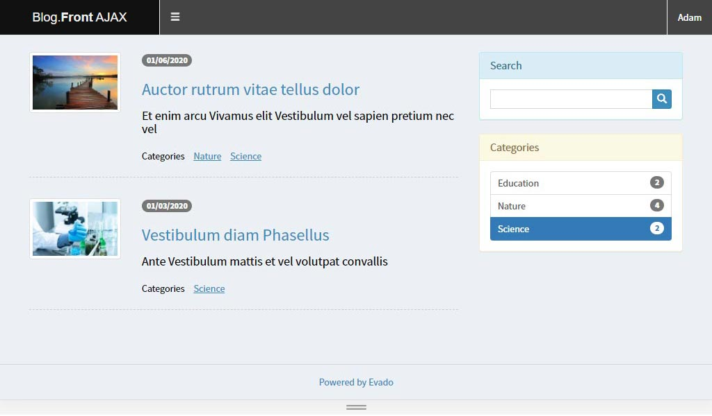

AJAX API
There are two ways to develop your own interface for interacting with application. The first way is to create a full featured Areto Framework module. It allows you to integrate into the system at the lowest level. See an example of such an implementation.
The second way is access to application functionality using an external API. It allows you to create and place modules both together and separately from the application server. See an example of such an implementation.
Client script sends an AJAX request to the server and processes received data. If the data requires authorized access, then client must first enter the system. All unauthenticated requests will be assigned the guest role..
To allow guests to see articles, add Read meta permission for publicList and publicView of the article class. Remember to restart security after this changes.